Kurzüberblick
Die Oberfläche auf einen Blick
Alles spielt sich in einem Fenster ab. Links wählst du, was du siehst, in der Mitte steht die Liste, rechts bearbeitest du, und unten hörst du vor.

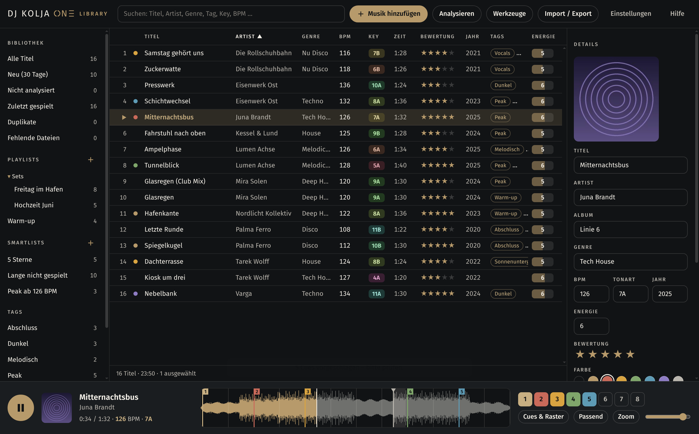
1 2 3 4 5 6 7- Suche – findet Titel, Artist, Genre, Tag, Tonart und BPM, auch mehrere Wörter zugleich.
- Aktionen – Musik hinzufügen, analysieren, Werkzeuge, Import / Export, Einstellungen und diese Hilfe.
- Seitenleiste – feste Ansichten der Bibliothek, deine Playlists, Smartlists und Tags.
- Titelliste – sortierbar per Klick auf die Kopfzeile; Doppelklick lädt ins Deck, Rechtsklick öffnet das Menü.
- Details – Angaben der Auswahl bearbeiten, bei mehreren Titeln gleichzeitig.
- Deck – Vorhören mit Wellenform; ein Klick in die Wellenform springt an die Stelle.
- Cues – acht Hot Cues, „Cues & Raster“ zum Feinschliff, „Passend“ für harmonisch passende Titel, „Zoom“ für die Nahansicht.
Deine Dateien bleiben, wo sie sind
Die Bibliothek merkt sich nur Angaben über deine Musik. Nichts wird kopiert, verschoben oder hochgeladen.
Erst die Bibliothek, dann die Datei
Änderungen landen zunächst nur in ONE Library. In die Audiodateien schreibst du sie bewusst mit „Tags in Dateien schreiben“.
Zwei Wege zum Starten
Im Browser (Chrome oder Edge) oder als Desktop-App. Die Desktop-App kann zusätzlich Dateien umbenennen und direkt mit der DJ-Software abgleichen.
Quick Guide
Schnellstart in 5 Schritten
Starten
Desktop-App: im Ordner
desktopeinmalnpm install, danachnpm start.
Browser: Doppelklick aufstart-mac.commandoderpython3 server.pyundhttp://localhost:8778/öffnen.Musikordner hinzufügen
Oben auf Musik hinzufügen → Ordner hinzufügen … klicken und deinen Musikordner wählen. Du kannst Ordner auch einfach ins Fenster ziehen.
Analysieren
Analysieren → Alle nicht analysierten Titel. Die App ermittelt BPM, Tonart, Beatraster, Wellenform und Energie. Das läuft im Hintergrund; du kannst weiterarbeiten.
Ordnen
Titel anklicken und rechts bewerten, taggen, einfärben. Mit dem + neben „Playlists“ eine Liste anlegen und Titel hineinziehen.
An die DJ-Software übergeben
Import / Export → Exportieren … und das Format deiner Software wählen. In der Desktop-App geht es mit Direkter Abgleich ohne Umweg über Dateien.
Tipp: Leg vor dem ersten Abgleich eine Kopie der Bibliothek deiner DJ-Software an. ONE Library sichert ersetzte Dateien zwar selbst, aber doppelt hält besser.
Bibliothek
Musik hinzufügen
Über Musik hinzufügen wählst du ganze Ordner oder einzelne Dateien. Unterordner werden mitgelesen. Unterstützt werden MP3, M4A/AAC, FLAC, WAV, AIFF, OGG und Opus.
Beim Hinzufügen liest die App vorhandene Tags und Cover. Steht nichts in der Datei, wird der Dateiname nach dem Muster „Artist - Titel“ gelesen. Cues, die Serato in MP3-Dateien abgelegt hat, kommen gleich mit.
Fügst du einen Ordner erneut hinzu, entstehen keine Doppelten: Bekannte Dateien werden wiedererkannt und nur neu verbunden. So findest du auch verschobene Dateien wieder.

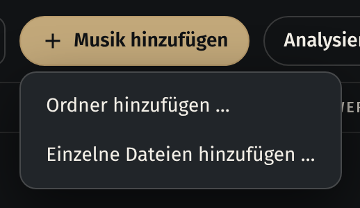
Im Browser: Chrome und Edge merken sich deine Ordner dauerhaft und fragen beim nächsten Start nur kurz nach Zugriff. Firefox und Safari können das nicht – dort wählst du den Ordner nach jedem Start neu.
Analysieren
Die Analyse hört jede Datei einmal durch und trägt ein:
- BPM und den Start des Beatrasters (erster Beat),
- die Tonart, wahlweise als Quintenzirkel-Nummer (8A) oder musikalisch (Am),
- die Wellenform für das Deck,
- die Lautheit und daraus eine geschätzte Energie von 1 bis 10.
Im Menü Analysieren wählst du, ob die Auswahl, alle noch nicht analysierten Titel oder die ganze aktuelle Ansicht neu analysiert wird. Die Ansicht „Nicht analysiert“ in der Seitenleiste zeigt, was noch fehlt.
Gut zu wissen: Die Analyse ist ein Vorschlag. Bei Titeln ohne klaren Beat oder mit Tempowechseln lohnt ein Blick ins Beatraster. Die Energie ist eine grobe Schätzung und lässt sich von Hand überschreiben.
Tabelle und Suche

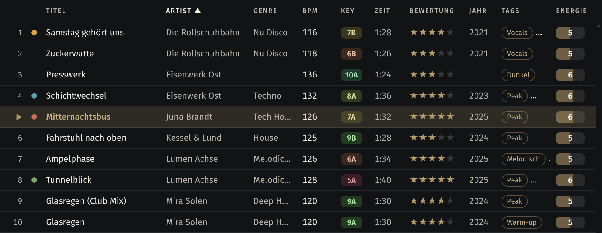
- Sortieren: Klick auf eine Spalte, zweiter Klick dreht die Richtung. Die Sortierung wird je Ansicht gemerkt.
- Spalten wählen: Rechtsklick auf die Kopfzeile. Zusätzlich gibt es Energie, Wiedergaben, zuletzt gespielt, Kommentar, Dateityp, Bitrate und Dateiname.
- Spalten verschieben: Spaltenkopf an eine andere Stelle ziehen.
- Breite ändern: am rechten Rand des Spaltenkopfs ziehen.
- Mehrfachauswahl: Strg/⌘-Klick für einzelne, Umschalt-Klick für einen Bereich, Strg/⌘+A für alle.
Die Suche durchsucht Titel, Artist, Album, Genre, Kommentar, Tags, Tonart und BPM. Mehrere Wörter grenzen ein: techno 8A zeigt Techno-Titel in 8A.

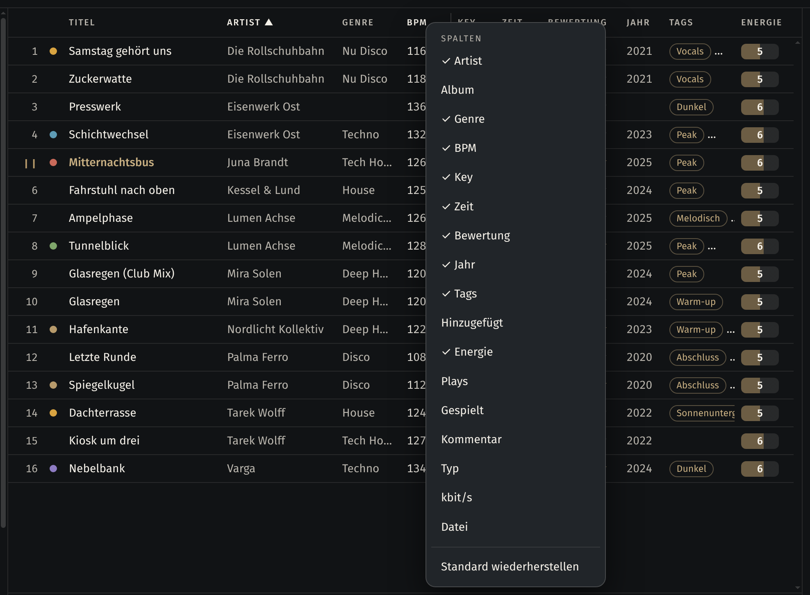
Titel bearbeiten

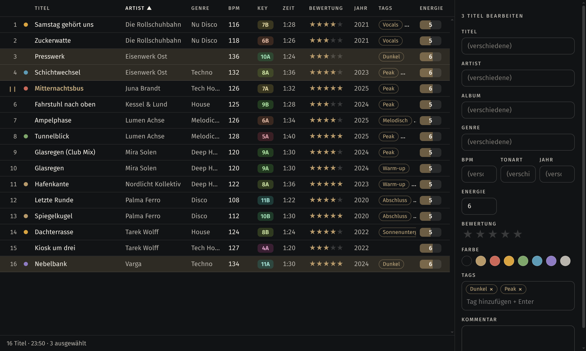
Wähle einen oder mehrere Titel und ändere die Angaben rechts im Bereich Details. Bei mehreren Titeln zeigen Felder mit unterschiedlichem Inhalt „(verschiedene)“; ein Feld wird erst überschrieben, wenn du etwas einträgst.
- Bewertung: Sterne anklicken; ein zweiter Klick auf denselben Stern löscht sie.
- Farbe: ein Farbpunkt vor dem Titel, zum Beispiel für Stimmungen oder Set-Abschnitte.
- Tags: eigene Schlagwörter. Eintippen und Enter drücken; bestehende Tags werden vorgeschlagen. Jeder Tag erscheint in der Seitenleiste als eigene Ansicht.
- Tonart: beide Schreibweisen werden verstanden –
8A,Am,F#m.
Rückgängig: Strg/⌘+Z nimmt Bearbeitungen in der Bibliothek zurück, Schritt für Schritt. Der letzte Schritt steht auch oben im Menü „Werkzeuge“.
Vorhören
Deck, Cues und Loops

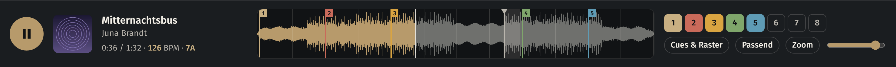
Ein Doppelklick (oder Enter) lädt einen Titel ins Deck. Die Leertaste startet und stoppt, ein Klick in die Wellenform springt.
Hot Cues
Tasten 1–8 oder die Felder rechts: Ist der Platz leer, wird an der aktuellen Stelle ein Cue gesetzt; ist er belegt, springt das Deck dorthin. Rechtsklick oder Umschalt+Ziffer löscht.
Memory-Cues
Zusätzliche Marken ohne Taste, etwa für Einsätze. Setzen mit M oder „+ Memory-Cue“.
Loops
Unter „Cues & Raster“ bekommt ein Cue eine Länge von 4 bis 32 Beats. Ein Klick auf den Cue startet den Loop, ein zweiter beendet ihn.
Vorschlagen setzt Cues an den Stellen, an denen sich der Pegel am stärksten ändert (Start, Einsätze, Break). Das spart Zeit – prüfe die Vorschläge trotzdem kurz.
Passend zeigt Titel, die zum geladenen passen: gleiche oder benachbarte Tonart und ein Tempo im Bereich von ±6 %.
Ist „Cues am Beatraster einrasten“ in den Einstellungen aktiv, landen neue Cues automatisch auf dem nächsten Beat.
Beatraster

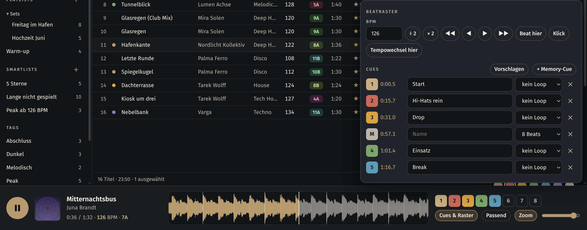
Stimmt das Raster, sitzen Cues und Loops genau. Öffne Cues & Raster (Taste E) und schalte den Zoom ein (Taste Z), um jeden Beat zu sehen.
- BPM direkt eintragen oder mit ÷ 2 und × 2 korrigieren, wenn das halbe oder doppelte Tempo erkannt wurde.
- ◀◀ ◀ ▶ ▶▶ verschieben das Raster um 10 oder 1 Millisekunde.
- Beat hier legt einen Beat genau auf die aktuelle Position.
- Klick spielt beim Abspielen einen Ton auf jeden Beat – so hörst du sofort, ob das Raster sitzt.
- Tempowechsel hier lässt ab der aktuellen Stelle ein anderes Tempo gelten, für Titel, die schneller oder langsamer werden.
In der Cue-Liste darunter gibst du Cues Namen, wechselst per Klick auf das Farbfeld die Farbe, stellst die Loop-Länge ein oder löschst sie.
Ordnen
Playlists und Smartlists

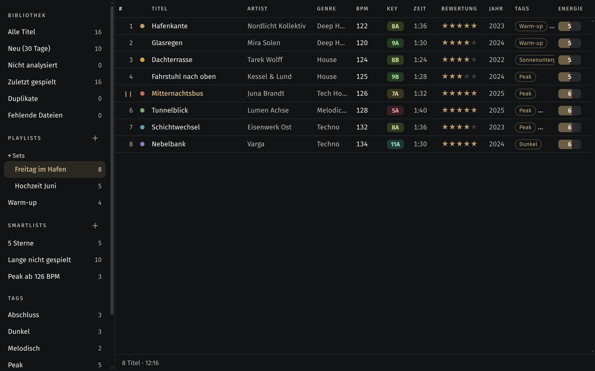
Playlists
- Anlegen: das + neben „Playlists“. Ein Name wie
Sets / Freitag im Hafenlegt die Liste im Ordner „Sets“ ab. - Füllen: Titel aus der Tabelle auf die Playlist ziehen, oder Rechtsklick → „Zu Playlist hinzufügen“.
- Reihenfolge: in der Playlist Titel an die gewünschte Stelle ziehen. Ein Klick auf die Spalte # stellt die eigene Reihenfolge wieder her, wenn du zwischendurch anders sortiert hast.
- Umbenennen, löschen: Rechtsklick auf die Playlist.
Smartlists
Smartlists füllen sich selbst nach Regeln und bleiben aktuell, wenn du Titel bewertest oder taggst.
- Regeln prüfen Felder wie BPM, Genre, Tags, Bewertung, Energie oder „hinzugefügt vor … Tagen“.
- Gruppen erlauben Kombinationen wie „BPM über 125 und (Tag ist Peak oder Energie über 6)“.
- Höchstens begrenzt die Liste, zum Beispiel auf die 10 am längsten nicht gespielten Lieblingstitel.

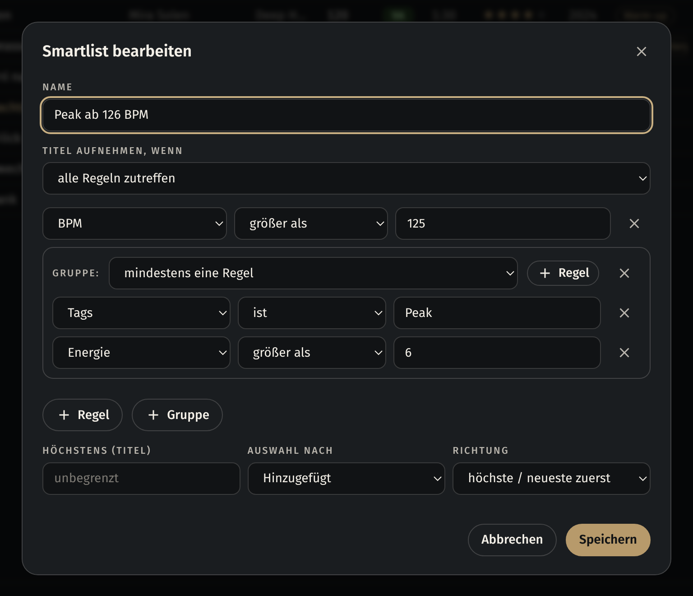
Feste Ansichten
„Neu (30 Tage)“, „Nicht analysiert“, „Zuletzt gespielt“, „Duplikate“ und „Fehlende Dateien“ stehen immer bereit. Darunter findest du jeden vergebenen Tag als eigene Ansicht – Titel lassen sich auch auf einen Tag ziehen.
Werkzeuge
Das Menü Werkzeuge bearbeitet die aktuelle Auswahl oder die ganze Bibliothek.
- Suchen & Ersetzen in Titel, Artist, Album, Genre oder Kommentar – praktisch, um Genres zu vereinheitlichen.
- Titel/Artist aus Dateiname für Dateien ohne Tags.
- Groß-/Kleinschreibung bereinigen, Artist und Titel tauschen, Leerzeichen bereinigen.
- Album, Jahr und Genre online ergänzen – fragt den freien Katalog musicbrainz.org. Gesendet werden nur Artist und Titel der Auswahl; vorhandene Angaben bleiben.
- Tags in Dateien schreiben – siehe nächster Abschnitt.
- Dateien umbenennen nach Muster (nur Desktop-App).
- Dateien prüfen findet Einträge, deren Datei nicht mehr erreichbar ist.
- Duplikate zusammenführen behält je Titel den besten Eintrag und überträgt Bewertung, Tags, Cues und Playlists. Als Duplikat gilt: gleicher Artist und Titel bei gleicher Länge.

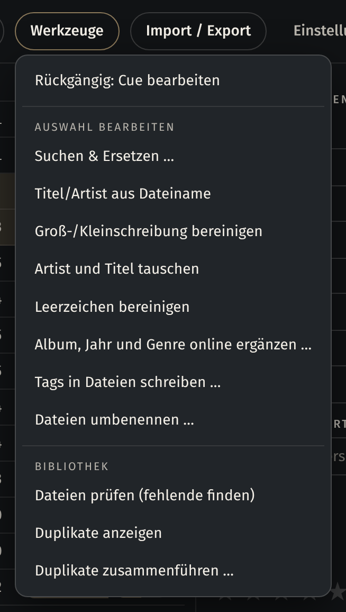

DJ-Software
Austausch mit DJ-Software
Unter Import / Export liest und schreibst du die Formate der gängigen Programme. Beim Import kannst du mehrere Dateien auf einmal wählen oder ins Fenster ziehen.
Bereits vorhandene Titel werden beim Import erkannt und nur ergänzt – leere Felder werden gefüllt, deine eigenen Angaben nicht überschrieben.

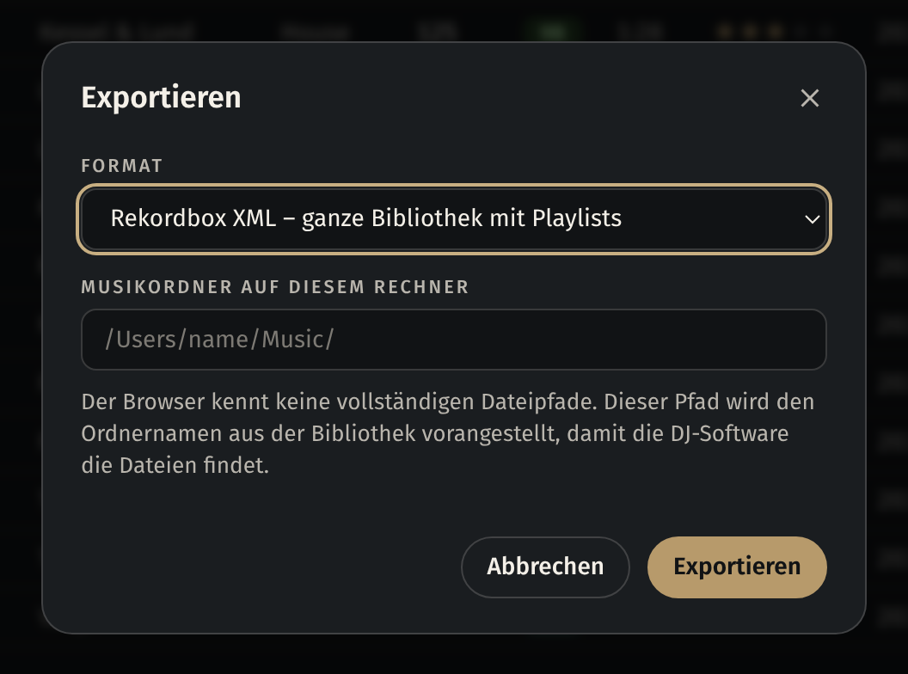
| Programm | Importieren | Exportieren | Was mitgeht |
|---|---|---|---|
| rekordbox | XML der Sammlung; Playlist- und Verlaufslisten als M3U8 oder TXT | XML mit Bibliothek und Playlists | Tags, BPM, Tonart, Beatraster mit Tempowechseln, Hot Cues, Memory-Cues, Loops |
| Traktor | collection.nml und Verlaufsdateien | NML mit Bibliothek und Playlists | Tags, BPM, Tonart, Raster-Start, Cues, Loops |
| Serato | database V2, .crate, Verlauf; Cues aus MP3-Dateien | Playlists als Crates (ZIP) | Playlists. BPM und Tonart über geschriebene Tags, Cues optional beim Tags-Schreiben |
| VirtualDJ | database.xml, .vdjfolder, M3U | database.xml und Playlists (ZIP) | Tags, BPM, Tonart, Bewertung, Raster-Start, Cues |
| Allgemein | M3U / M3U8 | M3U8 und CSV der aktuellen Ansicht | Reihenfolge und Dateipfade bzw. eine Tabelle zum Weiterverarbeiten |
Dateipfade im Browser: Der Browser verrät Webseiten keine vollständigen Pfade. Trag deshalb beim Export einmal deinen Musikordner ein (zum Beispiel /Users/name/Music/). In der Desktop-App entfällt das.
Verlauf gespielter Titel
Verlaufsdateien werden als Playlists unter „Verlauf / …“ einsortiert, und die Titel erscheinen unter „Zuletzt gespielt“. Bei rekordbox exportierst du die gewünschte Verlaufsliste dort per Rechtsklick als Datei (M3U8 oder TXT) und importierst sie hier; Dateien mit „HISTORY“ im Namen werden automatisch als Verlauf erkannt.
Desktop-App und direkter Abgleich
Die Desktop-App zeigt dieselbe Oberfläche, hat aber vollen Zugriff auf deine Dateien. Zusätzlich bietet sie:
- Direkter Abgleich (Import / Export → „Direkter Abgleich mit DJ-Software …“): Programm und Richtung wählen, ausführen.
- Verlauf einlesen aus Serato, VirtualDJ, Traktor und – über exportierte Listen – rekordbox.
- Dateien umbenennen nach Muster, etwa
%artist% - %title%. - Tags schreiben ohne Rückfrage des Browsers.

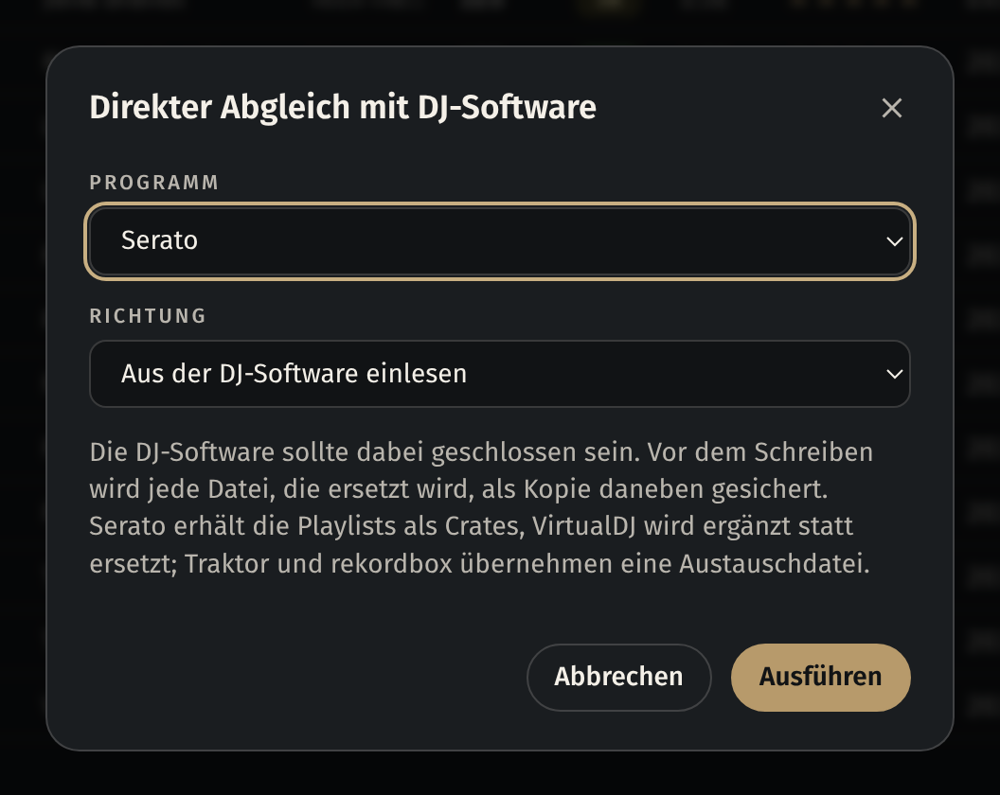
| Programm | Einlesen | Schreiben |
|---|---|---|
| Serato | Datenbank und Crates aus _Serato_, auch von externen Laufwerken | Playlists als Crates in das _Serato_ des jeweiligen Laufwerks |
| VirtualDJ | database.xml und Playlists | Die Datenbank wird ergänzt, fremde Einträge bleiben stehen; Playlists als M3U |
| Traktor | collection.nml der neuesten Version | ONE Library.nml im Traktor-Ordner; in Traktor über „Import Another Collection“ einlesen |
| rekordbox | Dokumente/ONE Library/rekordbox.xml | Dieselbe Datei; in rekordbox einmalig als „rekordbox xml“ eintragen |
Sicherheit: Schließ die DJ-Software vor dem Abgleich. Jede Datei, die ersetzt wird, legt die App vorher als Kopie mit der Endung .one-sicherung-… daneben ab.
Sicher ist sicher
Sicherung
- Automatisch: Einmal am Tag sichert die App die Bibliothek, die letzten sieben Stände bleiben erhalten. Wiederherstellen unter Einstellungen → Automatische Sicherungen.
- Von Hand: Import / Export → Backup jetzt speichern lädt eine JSON-Datei mit allen Titeln, Listen, Einstellungen und Wellenformen herunter. Dieselbe Datei spielst du über „Importieren“ wieder ein.
Wichtig: Die Bibliothek liegt im Speicher des Browsers bzw. der Desktop-App auf diesem Rechner. Wer den Browser-Speicher löscht oder den Rechner wechselt, braucht die Backup-Datei – speichere sie regelmäßig außerhalb des Rechners.
Einstellungen
- Sprache: Deutsch oder Englisch.
- Darstellung: dunkel oder hell.
- Tonart-Anzeige: Quintenzirkel-Nummern (8A) oder musikalisch (Am).
- Cues am Beatraster einrasten.
- Lautstärke beim Vorhören angleichen: Laute Titel werden im Deck leiser gespielt; die Dateien bleiben unverändert.
- Musikordner für Exporte (nur im Browser nötig).
- Tastenkürzel anpassen und Automatische Sicherungen.

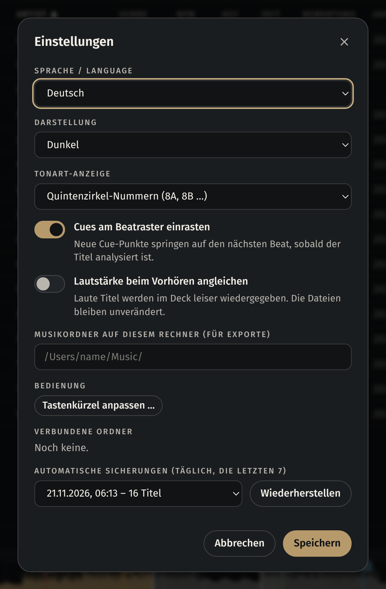

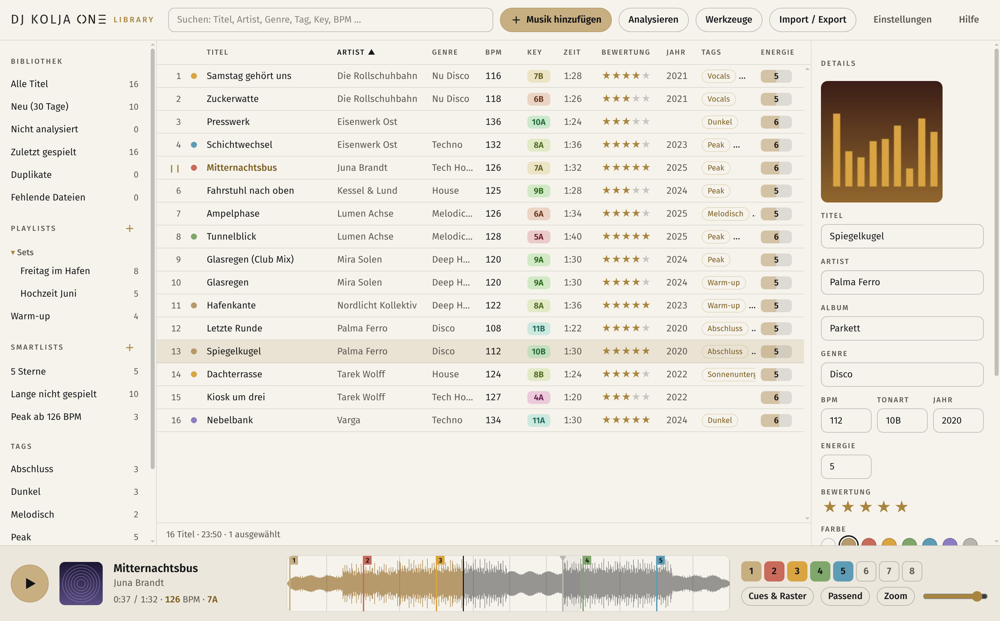
Tastenkürzel
| Taste | Wirkung | Anpassbar |
|---|---|---|
| Leertaste | Wiedergabe / Pause | ja |
| Enter | Auswahl ins Deck laden | ja |
| 1 – 8 | Hot Cue setzen oder anspringen; mit Umschalt löschen | nein |
| M | Memory-Cue setzen | ja |
| E | Cues & Raster öffnen | ja |
| Z | Wellenform-Zoom | ja |
| H | Passende Titel anzeigen | ja |
| A | Auswahl analysieren | ja |
| / oder Strg/⌘+F | Suche | teils |
| ↑ ↓ | Auswahl bewegen; mit Umschalt erweitern | nein |
| Strg/⌘+A | Alle Titel der Ansicht auswählen | nein |
| Strg/⌘+Z | Rückgängig | nein |
| Entf | Aus Playlist bzw. Bibliothek entfernen | nein |
Anpassen unter Einstellungen → Tastenkürzel anpassen …: auf die Taste klicken und die neue drücken.
Gut zu wissen
Fragen und Grenzen
Ein Titel ist grau und kursiv – was heißt das?
Die Datei ist gerade nicht verbunden: Sie wurde verschoben, das Laufwerk fehlt, oder der Browser hat noch keinen Zugriff. Füg den Ordner über „Musik hinzufügen“ erneut hinzu; die Titel werden automatisch wieder zugeordnet. „Fehlende Dateien“ in der Seitenleiste zeigt alle betroffenen Einträge.
Werden meine Dateien verändert?
Nur, wenn du es ausdrücklich auslöst: mit „Tags in Dateien schreiben“ und – in der Desktop-App – „Dateien umbenennen“. Alles andere ändert nur die Bibliothek.
Was lässt sich nicht rückgängig machen?
Importe, geschriebene Tags und umbenannte Dateien. Für Importe hilft die automatische Sicherung vom Vortag.
Warum zeigt Serato meine Cues nicht?
Serato liest Cues aus den Audiodateien, nicht aus Crates. Aktiviere beim Tags-Schreiben „Cues für Serato mitschreiben“. Die Option ist experimentell; hatte die Datei bereits Serato-Cues, bleiben diese unverändert.
Kann ich direkt in die rekordbox- oder Traktor-Datenbank schreiben?
Nein. Beide verwenden eigene, teils verschlüsselte Datenbanken. Der Weg führt über eine Austauschdatei, die du im jeweiligen Programm einmal einbindest.
Gibt es Streaming-Dienste oder Engine DJ?
Beides ist nicht enthalten.
Wie genau ist die Analyse?
Bei Musik mit klarem Beat liegt sie meist richtig; halbes oder doppeltes Tempo korrigierst du mit ÷ 2 und × 2. Das Raster hat ein festes Tempo, Tempowechsel trägst du von Hand ein.
Stand der Erprobung: Der Austausch mit Serato, VirtualDJ, Traktor und rekordbox ist nach deren Dateiformaten gebaut, aber noch nicht mit jeder Programmversion gegengeprüft. Sichere vor dem ersten Abgleich die Bibliothek deiner DJ-Software.